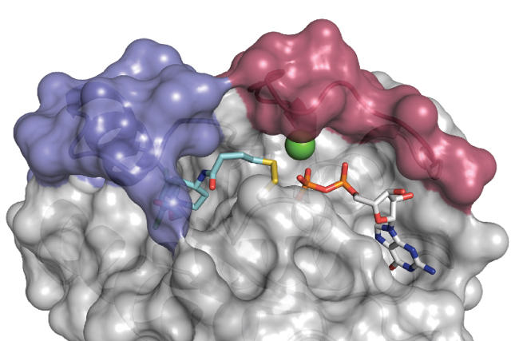
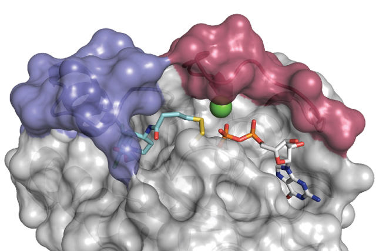
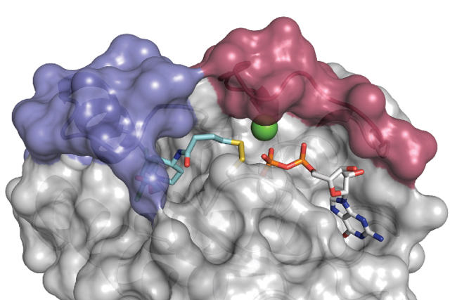
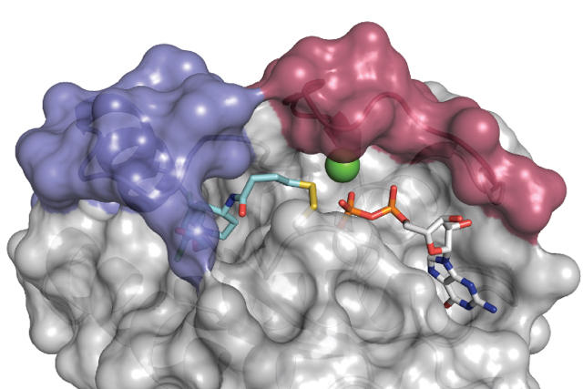

Research in our laboratory is focused on the discovery of new small molecule tools and drug candidates targeting protein/lipid kinases, GTPases, and RNA helicases. We use the tools of synthetic organic chemistry, protein engineering, structural biology, biochemistry and cell biology. In oncology and neurodegenerative diseases we focus primarily on targets in pathways which have been validated by human genetics, such as the lipid kinase PIK3CA (mutated in 20% of human tumors), the GTPase KRAS (the first human oncogene), the metabolic and growth factor sensitive kinase mTOR, the mitochondrial kinase PINK1 (Parkinson’s Disease), and the kinase LRRK2 (Parkinson’s Disease).
In addition to a focus on early drug discovery, we seek to uncover fundamental principles of cell signaling that require the development of new chemical tools. Pharmacology allows rapid, reversible and dose dependent inactivation of single components in intact cells or organisms. The challenge is that highly selective pharmacological probes (agonists, antagonists, traceable substrates, etc.) of members of large enzyme families (protein kinases & RNA helicases) are difficult to develop because every family member shares a highly homologous ATP binding pocket. Our laboratory has solved this fundamental problem for the largest family of enzymes in the human genome, protein kinases, by using protein engineering to create a unique ATP binding pocket which does not exist naturally and then to create a matched chemical inhibitor or substrate which exploits that pocket to selectively target one member of the family at a time. We have termed this approach chemical genetics. It has been widely applied in yeast, plants, mammalian cells and animals.